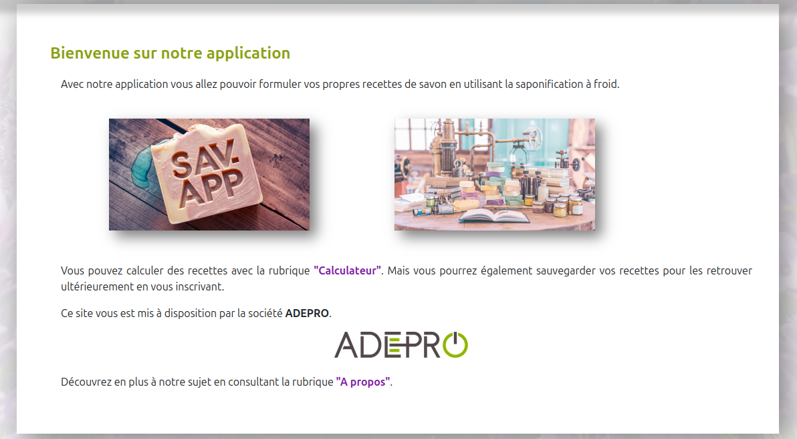
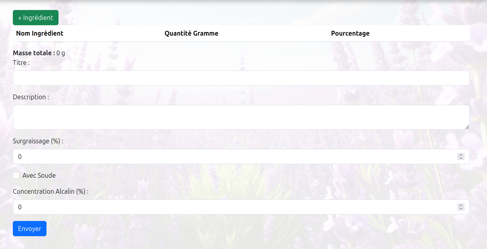
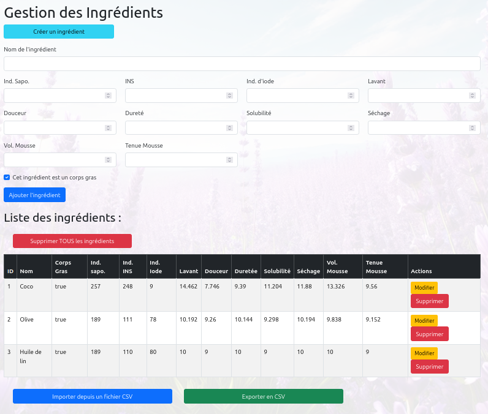

Application fullstack de formulation de savons - Réalisé en deuxième année de BTS SIO SLAM - 2024
Ce projet complet est composé de deux parties distinctes mais complémentaires :
L'application permet aux utilisateurs de créer et de gérer des recettes de savon en utilisant la technique de saponification à froid, avec un calcul automatique des propriétés physico-chimiques du savon (dureté, pouvoir lavant, etc.) selon les ingrédients utilisés.
SavonApp est l'interface utilisateur de l'application, développée avec Angular. Elle permet aux utilisateurs d'interagir avec l'application de manière intuitive et efficace.
Page d'accueil présentant l'application et ses principales fonctionnalités. Les utilisateurs peuvent accéder au calculateur ou sauvegarder leurs recettes.
Interface permettant aux utilisateurs de créer des recettes en spécifiant les ingrédients et leurs quantités. L'application calcule en temps réel les propriétés du savon.
Interface permettant de gérer la base de données des ingrédients disponibles pour les recettes. Chaque ingrédient possède des propriétés spécifiques qui influent sur les caractéristiques du savon final.

// Service Angular pour la communication avec SavonAPI
import { Injectable } from '@angular/core';
import { HttpClient } from '@angular/common/http';
import { Observable } from 'rxjs';
import { Recette } from '../models/recette.model';
import { environment } from '../../environments/environment';
@Injectable({
providedIn: 'root'
})
export class RecetteService {
private apiUrl = `${environment.apiUrl}/api-savon/v1/recette`;
constructor(private http: HttpClient) { }
getAllRecettes(): Observable {
return this.http.get(this.apiUrl);
}
getRecetteById(id: number): Observable {
return this.http.get(`${this.apiUrl}/${id}`);
}
createRecette(recette: Recette): Observable {
return this.http.post(this.apiUrl, recette);
}
updateRecette(id: number, recette: Recette): Observable {
return this.http.put(`${this.apiUrl}/${id}`, recette);
}
deleteRecette(id: number): Observable {
return this.http.delete(`${this.apiUrl}/${id}`);
}
}
SavonAPI est le backend de l'application, développé en Kotlin avec Spring Boot. Il fournit une API RESTful pour la gestion des données et implémente toute la logique métier liée à la formulation des savons.
SavonAPI implémente plusieurs algorithmes complexes pour calculer les propriétés des savons :
@RestController
@CrossOrigin
@RequestMapping("/api-savon/v1/recette")
class RecetteController(
val simulateurService: SimulateurService,
val recetteDAO: RecetteDAO
) {
@GetMapping
fun index(): List {
return this.recetteDAO.findAll()
}
@GetMapping("/{id}")
fun show(@PathVariable id: Long): ResponseEntity {
val recette = this.recetteDAO.findById(id)
return if (recette.isPresent) {
ResponseEntity.ok(recette.get())
} else {
ResponseEntity.notFound().build()
}
}
@PostMapping
fun store(@RequestBody recetteFormDTO: RecetteFormDTO): ResponseEntity {
val savedRecette = this.simulateurService.toRecette(recetteFormDTO)
return ResponseEntity.status(HttpStatus.CREATED).body(savedRecette)
}
@PutMapping("/{id}")
fun store(@PathVariable id: Long, @RequestBody recetteFormDTO: RecetteFormDTO): ResponseEntity {
recetteFormDTO.id = id
val savedRecette = this.simulateurService.toRecette(recetteFormDTO)
return ResponseEntity.status(HttpStatus.CREATED).body(savedRecette)
}
@DeleteMapping("/{id}")
fun delete(@PathVariable id: Long): ResponseEntity {
return if (recetteDAO.existsById(id)) {
recetteDAO.deleteById(id)
ResponseEntity.noContent().build()
} else {
ResponseEntity.notFound().build()
}
}
}
fun calculPondere() {
//Calcul des scores
var douceur: Double = this.ligneIngredients.sumOf { it.ingredient!!.douceur * it.pourcentage / 100.toDouble() }
var lavant: Double = this.ligneIngredients.sumOf { it.ingredient!!.lavant * it.pourcentage / 100.toDouble() }
var volMousse: Double = this.ligneIngredients.sumOf { it.ingredient!!.volMousse * it.pourcentage / 100.toDouble() }
var tenueMousse: Double = this.ligneIngredients.sumOf { it.ingredient!!.tenueMousse * it.pourcentage / 100.toDouble() }
var durete: Double = this.ligneIngredients.sumOf { it.ingredient!!.durete * it.pourcentage / 100.toDouble() }
var solubilite: Double = this.ligneIngredients.sumOf { it.ingredient!!.solubilite * it.pourcentage / 100.toDouble() }
var sechage: Double = this.ligneIngredients.sumOf { it.ingredient!!.sechage * it.pourcentage / 100.toDouble() }
//Modification avec le surgraissage
douceur = douceur * (1 + 0.01494 * this.surgraissage)
lavant = lavant * (1 + -0.01203 * this.surgraissage)
volMousse = volMousse * (1 + -0.00702 * this.surgraissage)
tenueMousse = tenueMousse * (1 + 0.01016 * this.surgraissage)
durete = durete * (1 + -0.00602 * this.surgraissage)
solubilite = solubilite * (1 + 0.00250 * this.surgraissage)
sechage = sechage * (1 + -0.00503 * this.surgraissage)
//Affectation aux resultats
this.resultats.find { it.caracteristique!!.nom == "Douceur" }!!.score = douceur.toFloat()
this.resultats.find { it.caracteristique!!.nom == "Lavant" }!!.score = lavant.toFloat()
this.resultats.find { it.caracteristique!!.nom == "Volume de mousse" }!!.score = volMousse.toFloat()
this.resultats.find { it.caracteristique!!.nom == "Tenue de mousse" }!!.score = tenueMousse.toFloat()
this.resultats.find { it.caracteristique!!.nom == "Dureté" }!!.score = durete.toFloat()
this.resultats.find { it.caracteristique!!.nom == "Solubilité" }!!.score = solubilite.toFloat()
this.resultats.find { it.caracteristique!!.nom == "Séchage" }!!.score = sechage.toFloat()
}
Ce projet fullstack a été l'occasion de mettre en pratique un large éventail de compétences techniques, tant côté frontend que backend, et de développer une application complète et fonctionnelle.